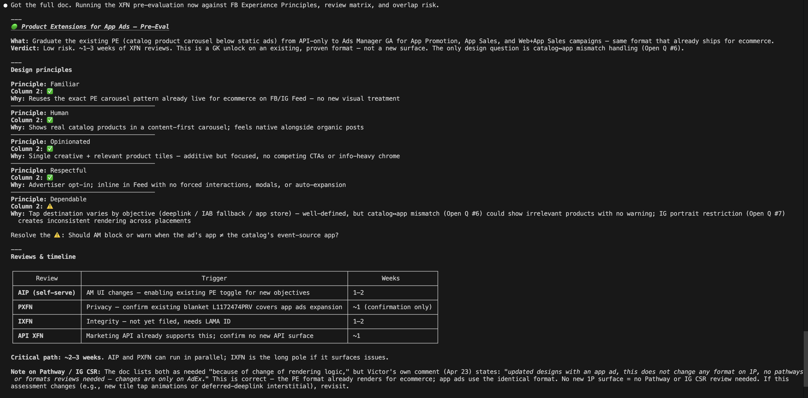
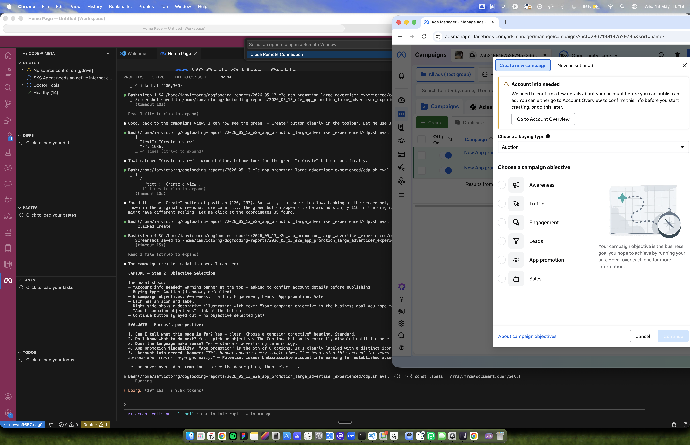
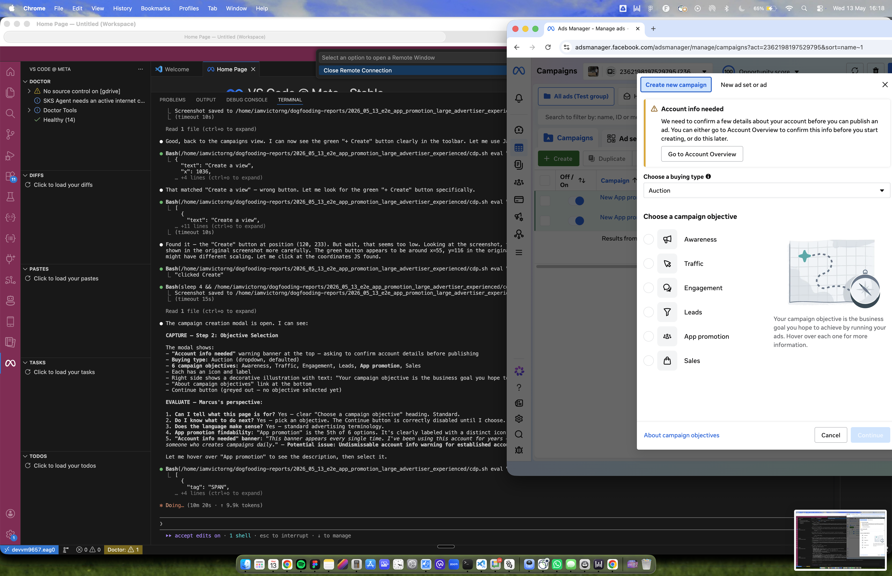
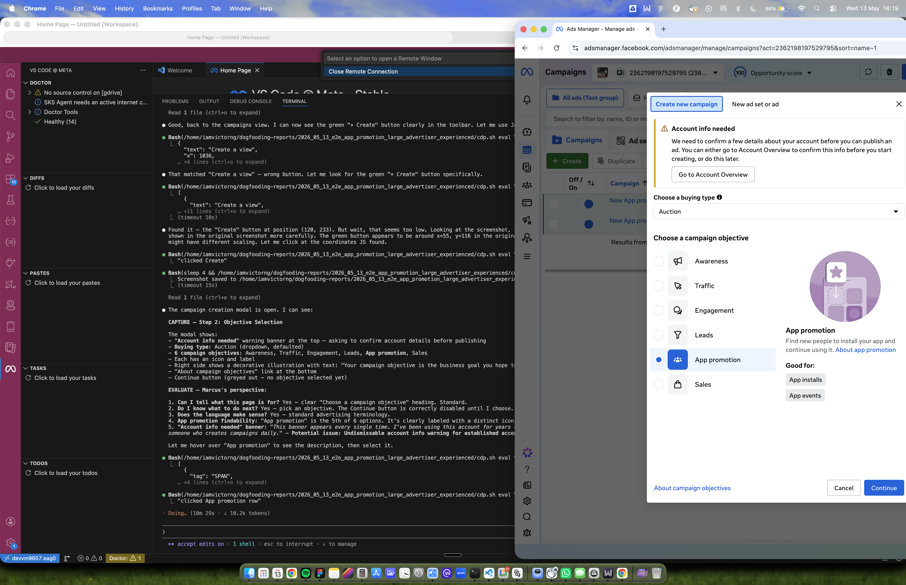

Streamlining Usability
Workflows with AI
As Usability Lead for Ads Manager, I built an AI workflow that changed how our team dogfoods: from automated persona testing to shipping the frontend fixes myself. It cut our design to ship cycle in half.
Building the testing agent was the easy part. What changed things was owning the whole loop, from automated testing all the way to learning to ship the frontend fixes myself. Once a designer can put fixes into production, product quality stops waiting on engineering bandwidth.
On Ads Manager, every team owns a flow. Mine, App & Gaming, owns the experience advertisers use to promote an app. As the team's Usability Lead, I'm responsible for keeping that flow at the highest quality bar in the org.
That bar is enforced two ways, and both are manual. Internally, my team and our design leads run quarterly dogfooding sessions, testing our own flow the way a customer would. Externally, a central usability team scores every team's flow against a rigorous rubric. Between them, that's the standard I own.
Through H1 2026, as designers across the org began adopting AI, I spent the cycle testing tools and asking a sharper question: how could I streamline this entire process for my team, not just speed up a single step of it?
Engineering bandwidth is finite, so the "low priority" work, especially small UI fixes, rarely survives prioritization. Those fixes are real usability debt that just never ships. Learning to vibe code as a designer closes that gap. I find the issue, then ship the fix myself.
Automating UX Evaluation
Most of this work lived in systems design, cognitive modeling, and service design, not in Figma.
Eliminate inconsistency. Manual dogfooding (testing our own product the way a customer would) varies wildly from tester to tester. I designed a structured CAPTURE → EVALUATE → ACT protocol that evaluates the same surfaces, with the same rigor, every time.
Scale coverage. One person can now run several sessions a day across different personas and platforms, each one producing a structured report where every issue is already graded against Meta's product quality rubric. What used to take a week takes an afternoon.
Embed the user's perspective. The skill doesn't just check whether things work. It plays the part of specific advertiser archetypes, catching confusing defaults, jargon, and missing controls that functional testing walks right past.

Beyond Prompt Engineering
AI Fluency: Directing the LLM
Building this took working out how to hand an LLM a long task full of judgment calls. The prompts keep the agent in character for a whole session, get it to tell bugs apart from design problems, and stop it falling back on lazy AI habits like defaulting to "add a tooltip".
Automating Workflows That Require Human Judgment
Everyone assumes UX evaluation needs a human and resists automation. I pulled "judgment" apart into concrete questions a model can actually check: "Can the persona tell what this page is for? Do they know what to do next? Does the language match their technical level?"
Grounded in Internal Design Knowledge
The personas and the rubric weren't invented from scratch. I distilled them from Meta's own design system, encoding three internal frameworks into the agent's prompt: the Product Quality Scorecard (PQS), Meta's rubric for grading UX quality; the Usability Playbook (UPB), a 0 to 100 usability score; and our team's app promotion pattern docs. The agent now grades against the same standards a designer on my team would. The hard part was the translation: taking design judgment that usually lives in people's heads and writing it down as an explicit system an LLM can run the same way every session.
Five sources of internal design knowledge, the same standards my team already used to judge quality, became a single evaluation protocol the agent runs every session.
I model personas as cognitive states, not demographics. Run the same screen through Marcus and Priya and the criteria flip: one default reads as a power user's frustration and a beginner's relief at the same time. That tension is exactly what product teams have to design around.
Marcus's column is from the real Run 1 session. Priya's column is a projected read of those same screens through her documented model. It stays illustrative until her session runs.
Advantage+ defaulting ON is a retention risk and a retention aid at the same time, depending only on who's looking. The persona system catches that contrast on every run, instead of leaving it to whoever happens to be testing.
What One Session Surfaced
For its first production run, the agent took Enterprise Marcus through the full App Promotion flow on iOS and Android, back to back, in about 90 minutes. One pass surfaced 18 issues, including things our manual sessions had been walking past. A few mattered enough to show here; the point is how many it caught, and how fast.
When we dogfood our own product, we rarely step all the way into the advertiser's shoes, so issues like these slip right past us. The agent doesn't have that problem. Each one is filed as a task in the persona's own voice, with the structured record attached for triage.
SKAdNetwork Configuration Missing
Enterprise advertisers cannot configure their iOS measurement strategy. SKAdNetwork is Apple's privacy era system for measuring app installs, so wrong defaults quietly degrade campaign reporting. At $2M+/month, that is real measurement risk.
"I scrolled through the entire ad set for my iOS campaign. Where is SKAdNetwork? My entire iOS strategy depends on getting the conversion schema right. If the system is making SKAN decisions for me, I need to know what those decisions are."
Android Ad Level Fails to Recognize App
After selecting an app at the ad set level, the ad level shows an error warning: "multiple apps that can't be edited together." This is a flow breaking bug that blocks Android campaign creation.
"I selected one app on Google Play. Now the ad level says I have 'multiple apps that can't be edited together.' And it tells me to go back and select a store that I already selected. This is broken."
A single report was never the goal. I wanted a system that runs the same way every time, faster, and catches what a tired tester on one platform would miss, like the cross platform bugs it caught running iOS and Android back to back.
First run figures from a single session; manual baselines reflect the team's prior experience rather than a controlled study. The comparison will firm up as more sessions accrue.
The findings don't stop at a document. Every issue lands as a classified ticket on the team's engineering board, with screenshots attached and a row logged to our tracker. I wired the output into the tools we already use, so triage starts the moment the run ends.


Key Design Decisions
The skill is a set of modular markdown files, kept deliberately separate. The evaluation engine stays fixed while personas and flows swap in and out, so any team at Meta can fork it for their own surface in a day without touching the core logic.
Iteration: Two Personas, Not Three
I started with three personas. Testing showed the middle "agency" persona was producing overlapping noise rather than distinct findings, so I cut it to two extreme archetypes: First Time Priya (catches onboarding gaps) and Enterprise Marcus (catches power user friction). Two clear voices gave far cleaner signal than three that overlapped.
App Specific Focus Areas
I spelled out the areas the agent has to inspect (Objective selection, App selection, SKAdNetwork). Without that, it just evaluates whatever is most visually prominent. This keeps the attention on the surfaces our team actually owns.
Reused Infrastructure
I reused the browser setup flow, the quality and usability scoring frameworks, report templates, and task creation flow from a previous Playables skill. The differentiation is in the evaluation focus, not the tooling.

I Found the Issues, Then Shipped the Fixes Myself.
The agent gave me a reliable, repeatable way to surface issues. But I didn't stop at filing tickets. I tested every issue it flagged, confirmed it was real, then used vibe coding to write the frontend fix myself. An engineer on the team reviewed every diff before it landed in production.
Learning enough to close the gap between finding a problem and shipping the fix is what changed how I work. 10+ frontend changes landed in a single week, fixed by the person who understood the UX problem best instead of waiting for sprint planning.
The agent flagged that Advantage+ audience defaults ON with no explanation: a beginner never realizes it's on, a power user can't tell how to take control. Exactly the kind of small fix that never survives prioritization. So I wrote it and shipped it.
One representative fix from the ten plus shipped that week.
The system now runs the same way for our team dogfooding sessions. The agent handles detection, I handle verification and fixes, and an engineer handles review. The whole design to ship cycle dropped by half.
When design can ship frontend, product quality stops waiting in someone else's backlog. The small fixes that used to die in prioritization get caught and corrected by the person who cares most about them. The real change here is simple: design now holds the quality bar and enforces it directly in the code.
What I'd Watch, and Where It Goes
I've built this twice now, and a third would take about a day. The real result is less a single skill than a template any team that owns a flow can stand up, tuned each session for depth over coverage.
Today the skill stops once an issue is filed. Next is closing the loop: let it propose the fix, then rerun the same session after the fix ships to confirm it held. That turns a testing tool into regression detection on a schedule.
- n = 1. The headline numbers are one real run. Signal, not proof.
- Personas validated only by me. Built from internal docs and my own read, never sat next to a real advertiser.
- Fragile plumbing. Driving a remote browser over an SSH tunnel works, but it's brittle.